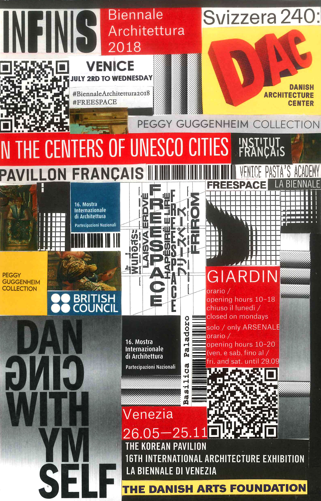
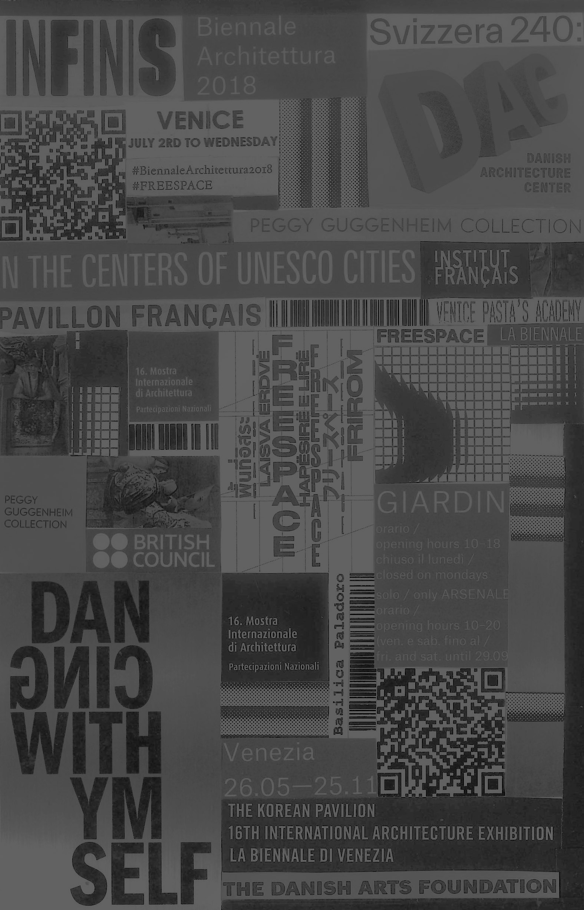

Biennale
I would only ever consider coming back here
in the winter time.
> Fewer crowds
> Less heat stroke induced by crowds
Location:
Materials:
Journal entry
Being at the Venice biennale triggered the same part of my brain as being back at the Richmond Children’s Museum – this was a playground for adults who love art. I honestly did not expect to love the experience of the Biennale as much as I did. Seeing the sheer quality of the work that real professionals produce was inspiring in itself. I am taking a folder of images and inspiration with me back to the United States as I continue my education. Being able to see the Biennale will likely be one of my favorite Sam Fox learning experiences.